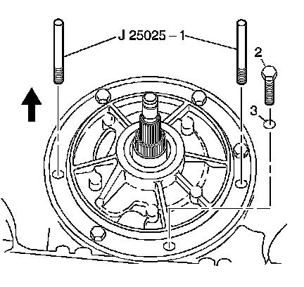

Oil Pump Assembly Installation
Oil Pump Assembly Installation
Tools Required
^ J 25025-1 Dial Indicator Mounting Post
^ J 39855 Stator Shaft Seal Installer
1. Install the J 25025-1.
2. Remove the J 39855-2 which is part of kit J 39855.
3. Install the pump to drum thrust washer (601).
4. Use J 36850 or equivalent to retain the washer to the pump.
5. For pump assemblies with an ISS hole plug (248), lubricate a NEW O-ring (249) with transmission fluid, and install onto the ISS hole plug (248).
6. Install the ISS hole plug (248) into the ISS hole and align with the mounting hole.
Notice: Refer to Fastener Notice.
7. Install the bolt (247).
Tighten the bolt to 9-11 N.m (6.6-8.1 lb ft).
8. Install the pump cover to case gasket (6).
Important: The oil pump to case seal is installed after the oil pump assembly, during torque converter installation. Refer to Converter Housing Installation.
9. Install the oil pump assembly (4) into the case and align all holes properly.

Important: The pump to case bolt O-ring seals (3) must be replaced.
10. Install the pump to case bolts (2) with new O-ring seals (3).
Tighten the bolts to 29 N.m (21 lb ft).
11. Remove the J 25025-1.
12. Install the remaining pump to case bolts (2) and O-ring seals (3), in the holes where the J 25025-1 were.
Tighten the bolts to 29 N.m (21 lb ft).